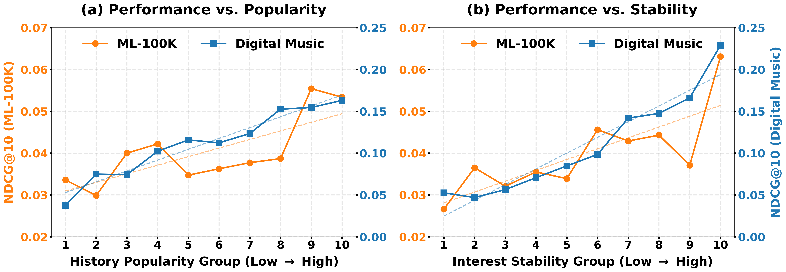
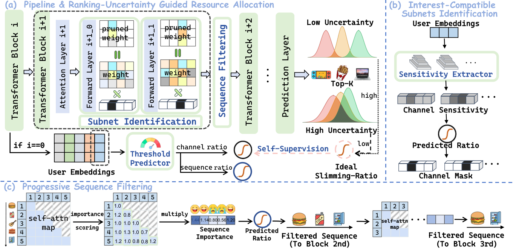
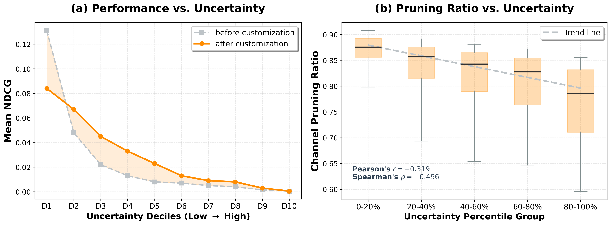
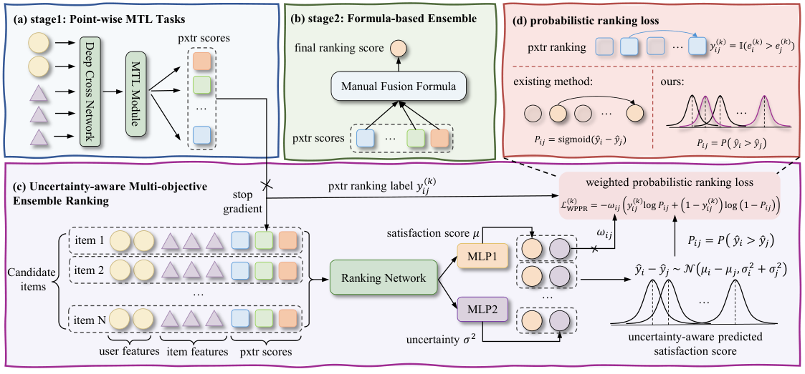
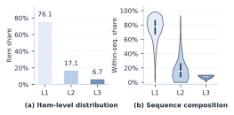
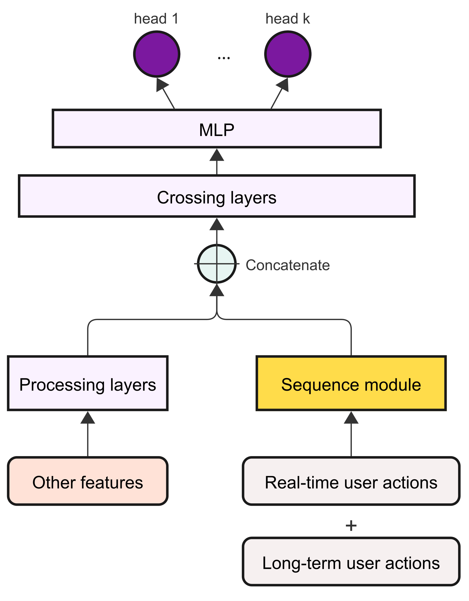

Contents · 6 sections
1History popularity does not tell you how hard a request is2How this uncertainty becomes a prune ratio3Walkthrough: how an uncertain request keeps more capacity4Uniform compression and single-side compression do not close this gap5What this means for people building on-device recommenders6LimitsSHARE
Stable tastes and shifting tastes get the same prune ratio: RACE slims the model by how unsteady the ranking isYou open a recommendation page on your phone. The cloud has already sent over a few dozen candidates, 50 in the paper's setting, and the scoring that actually decides which items you see has to be done once more on the phone.
But user histories are not equally hard. For someone whose last twenty clicks all sit in the same category, the model finishes the history with a wide gap at the top of the list, and the ranking is steady. For someone who just jumped from games to records to kitchenware, the same twenty items leave a narrow gap at the top; a small nudge to the variance can swap the order.
To run on the device, existing methods often compress the model at a fixed ratio first, then serve everyone with that same model. The steady request carries parameters it does not need; the shifting request loses history and parameters it still needs.
This paper, from Zhejiang University and Huawei, proposes a framework called RACE. It takes on a capacity-complexity mismatch in on-device sequential recommendation: uniform compression wastes compute on easy requests and leaves too little for hard ones. Prior work follows two lines. One is on-device finetuning, which needs backpropagation on every update and can keep serving a stale model for a while after interests shift. The other is compression: some methods give every request the same sparsity mask, some factorize weights into a low-rank form, and some compress a user's history into a fixed number of tokens. Other methods drop tokens dynamically, or customize parameters per device, but they do not jointly adjust model capacity and history length according to how hard this request is. RACE first measures how stable the model's Top-K list is, treats this list-wise ranking uncertainty as a signal of how hard the request is, then anticipates that signal from early-layer features and uses it to decide how many channels to prune and how much history to keep. On four public datasets, plugged into two Transformer sequential-recommendation backbones—SASRec predicts the next click from interaction history with self-attention, and BSARec is another Transformer backbone for the same task—RACE raises average NDCG by 40.87% and 47.73% over the uncompressed models, and cuts backbone inference FLOPs to 1/2.37 and 1/2.49 of the original.
Allocating capacity per request by list-wise ranking uncertainty is both more accurate and cheaper than uniform compression; that conclusion is currently limited to four public datasets, the SASRec and BSARec backbones, and a maximum history length of 20.
History popularity does not tell you how hard a request is
If a fixed prune ratio cannot match the difficulty of different requests, a natural idea is to score how hard this request is, then decide how much model to leave for it.
The easiest scores are read straight from the input: how popular the items in this history are, or how stable the user's recent interests have been. The paper splits requests into ten groups on each of these two measures and checks whether recommendation quality moves with them in a clean way. Neither curve shows a reliable trend, so neither can be used to allocate compute.

So history popularity and interest stability cannot be used as a fixed difficulty score. How hard a request is sits closer to how confident the model is in this particular ranking. Most existing uncertainty methods stay point-wise: they look at how much a single item's score jitters, and ignore how that item relates to the other candidates on the list. Ranking cares about relative order, so a single-item variance is not enough. Among common methods, dropout needs repeated forward passes, and ensembles need to keep multiple models, both of which are slow and heavy on a device.
RACE replaces the prediction head with a variational Bayesian last layer (VBLL). The weights are no longer a single point; they are a Gaussian, and one forward pass yields a predictive mean and variance for every item. With those two numbers, what it measures is how stable the model's Top-K ordering is; looking only at how sure a single item's score is does not suffice. In the experiments K is 20, wider than the top-5 cutoff used later for evaluation, so the metric sees a broader stretch of the list rather than only the very top items.
How this uncertainty becomes a prune ratio
The next problem is that this "how stable is the ranking" is only known after the last layer has produced the list. If inference had to run a full pass first and only then decide how much to prune, the allocation would come too late.
RACE splits the job into a training-time label and an inference-time prediction. During training, the model is run through the prediction head; from the resulting means and variances it computes, for every pair in the Top-K, the probability that one item outranks the other, then sums the negative logs of those probabilities to get list-wise ranking uncertainty. When score gaps are large and variances are small, the probability that one item ranks above the other approaches 1, and the summed uncertainty approaches 0; when gaps shrink or variances grow, the number rises and the request is treated as harder. The number is first standardized in the current mini-batch, then passed through a sigmoid, which maps a value x to 1/(1+exp(-x)), to obtain a target prune ratio for this request. The mapping includes a minus sign: higher uncertainty yields a lower prune ratio and more remaining capacity. This target ratio is used only as a label for the predictor; its gradient is not sent back during training. Hoot says
Illustrative: the body walk-through already takes an uncertain request to a target prune ratio of about 0.595, and does not walk the two different gradient paths used in training. This continues with that request and only looks at who can change the target ratio and the channel mask during training.
Target label τ* detached → predictor fits the label → predicted τ builds the hard mask → straight-through estimator sends gradients through continuous scores
- target ratio τ* → predictorFor this uncertain request the target prune ratio τ* is about 0.595. In training this label is detached and the predictor is trained to fit it from early-layer features, but the paper does not say whether this fitting loss also flows back into the first Transformer block.τ* ≈ 0.595 (from the body, illustrative)
- predicted τ → channel maskThe channel mask is built from the predictor's output τ, not from the label τ*. To walk the numbers, assume that at this moment the predictor also emits τ ≈ 0.595, matching the label, and that this predicted value is what cuts the channels.illustrative assumption: τ ≈ τ* ≈ 0.595
- prune ratio and sensitivity scores → hard maskFive channels have sensitivity scores 0.90, 0.70, 0.50, 0.40, and 0.20 (illustrative). With the predicted τ ≈ 0.595, roughly 40% are kept, so 2 of the 5 channels remain: 0.90 and 0.70 stay, and the other three are turned off by a hard mask in the forward pass.1 − 0.595 = 0.405, 5 × 0.405 ≈ 2
- straight-through estimator → continuous sensitivity scoresA hard mask is not differentiable, so the straight-through estimator still applies the hard mask in the forward pass, but lets gradients flow through the continuous scores, and the scorer can keep learning. The score 0.50 sits just below the cut, so without this path it would get no gradient to push itself over.0.50 is below the kept 0.70 and above the dropped 0.40

Source
Paper §3.2.3: the target ratio τ* is detached during predictor training; §3.3: training uses a straight-through estimator, the hard mask is detached, and gradients pass through the continuous channel scores. 0.595 reuses the illustrative target ratio from the body walk-through; the five channel scores are illustrative here.At inference the model no longer computes uncertainty on the full list. After the first Transformer block, RACE takes the hidden vector of the last valid item in the sequence as a dynamic user representation and feeds it to a small two-layer MLP. The predictor emits a channel prune ratio τ directly, then applies a linear transform to get a sequence prune ratio τ′. The shared defaults in the paper are about 80% of channels and about 40% of the sequence. A larger τ turns off more channels in that block's feed-forward network (a channel is a hidden unit in the feed-forward layer that can be switched on or off on its own); a larger τ′ shortens the history passed to the next block.
Once the ratio is known, the model still has to decide what to cut. On the channel side, RACE reuses hidden vectors it has already computed and does not attach a heavy external feature extractor. A lightweight sensitivity scorer (the paper calls it a hypernetwork-style extractor) maps the user vector to a sensitivity for each channel, then cuts at the quantile that corresponds to τ: channels with high enough scores are kept, and the rest are turned off by multiplying a mask onto the feed-forward weights. Training uses a straight-through estimator: the forward pass applies a hard mask, and the backward pass lets gradients flow through the continuous scores. On the sequence side, the model averages this block's multi-head attention, scales later-query attention up by query position, and then uses a product to accumulate an importance that asks whether later queries kept using this item. Each block leaves only the most important slice of history for the next block. During training, unselected positions are soft-masked so that batch length stays consistent; at inference those tokens are dropped, and FLOPs fall immediately.

In the implementation the maximum history length is 20, both backbones use four Transformer blocks, and the item embedding dimension is 64.
Walkthrough: how an uncertain request keeps more capacity
The numbers below are illustrative. They take one uncertain request from an unsteady list to a lighter prune. In the experiments the Top-K is 20, so there are 190 pairs; here we use three items to make the formula checkable.
Step 1: how stable is the list. The variational Bayesian head gives three items A, B, and C the means 2.0, 1.0, and 0.9, and the variances 0.1, 0.1, and 1.0 (illustrative). The probability that the first item ranks above the second is computed as follows: add the two variances and take the square root, divide the difference of means by that square root, then pass the result through the standard normal cumulative distribution function. That yields about 0.987 for A over B, about 0.853 for A over C, and only about 0.538 for B over C. List-wise ranking uncertainty is the sum of the negative natural logs of these three probabilities: about 0.013 + 0.159 + 0.620 = 0.792. If all three pairs were a nearly unambiguous 0.99, the same number would be only about 0.030. The extra mass comes from the 0.1 gap between B and C, together with C's variance of 1.0.
Step 2: turn this uncertainty into a prune ratio. Here the target center is taken to be the paper's default channel prune ratio of 0.8 (illustrative), so the centering term in the mapping is ln(0.8/0.2)≈1.386. Suppose that after standardization the uncertain request gets +1 and a very confident request gets -1 (illustrative). For the uncertain one, the target prune ratio is the sigmoid of -1 + 1.386, about 0.595; for the confident one it is the sigmoid of 1 + 1.386, about 0.916. In other words, the hard request prunes about 60% of the channels and keeps 40%, while the easy one prunes about 90% and keeps only 10%. At inference this ratio is emitted directly by the early-layer predictor, without first computing the full list.
Step 3: mask the feed-forward layer at this ratio. The sensitivity scorer first scores each channel, then cuts at the quantile, and the mask is multiplied onto the feed-forward weights to turn the remaining channels off. For this uncertain request, τ≈0.595, so about 40% of the channels are kept; for the confident request, only about 8% remain. Which channels stay depends on which ones the current user vector treats as more sensitive; requests do not share one static sparsity table. The paper counts the post-pruning compute in backbone FLOPs.
Step 4: shorten the history at a ratio as well. The paper's shared default sequence prune ratio is 0.4. With a history of length 20, a block keeps 20×0.6=12 items, and the rest are dropped at inference. The sequence ratio is obtained from τ by a linear transform; the direction matches the channel side, so an uncertain request prunes less history. The 12 items that remain are chosen by the position-weighted cumulative attention importance above, not by simply dropping the oldest items. The four blocks repeat this, and later blocks see a shorter sequence.
Step 5: set this allocation against the experiments. The paper includes a version that removes uncertainty-guided allocation; its numbers fall back to the uncompressed backbone, and all gains disappear. That row also removes the later channel and sequence customization, so it shows the whole adaptive pipeline disappearing together and cannot, by itself, prove how much the uncertainty signal contributed. Replacing only the prediction head with a variational Bayesian layer, without channel or sequence customization, can even hurt: on SASRec with MovieLens-100k, NDCG drops from 0.0299 to 0.0263. The comparison that isolates "change the ratio per request" is the version that still does both customizations but at a fixed prune ratio: it already beats the original model (0.0376 in the same column). After RACE allocates dynamically per request, NDCG on Douban with BSARec rises from that fixed-ratio version's 0.0233 to 0.0327, more than 40% higher. Doing only sequence filtering and turning off channel customization falls below the original model on Douban: SASRec drops from 0.0141 to 0.0104, and BSARec from 0.0206 to 0.0094. These ablations can show that channel customization, sequence filtering, and a dynamic ratio all contribute. Dynamic allocation also adds a further gain over pruning both sides at a fixed ratio. They cannot show how much the uncertainty signal contributes on its own, or how much the linear map from τ to τ′ contributes.
Uniform compression and single-side compression do not close this gap
The four datasets are MovieLens-100k, Douban, Amazon-CD, and Amazon-Game. Users and items with fewer than 10 interactions are removed, and each user's most recent 10% of interactions form the test set. Evaluation computes NDCG@5 and Hit@5 over the full item set, not over a pre-sampled candidate list. Compute is measured as backbone inference FLOPs, in millions (MFLOPs).
Among the comparisons, SNIP (prunes connections by saliency before training) and GEM (finds a subnet at initialization) give every request the same mask. APG (low-rank factorization) replaces dense weights with a low-rank approximation. DIET (multi-level sensitivity analysis per device) customizes parameters for different devices. ATP-LLAVA drops redundant tokens dynamically. PerSRec compresses a history into a fixed number of learnable tokens and keeps recent interactions; CAUSE (merges history by category) merges the history into category-based tokens, also with a fixed compression budget. On-device finetuning keeps full precision and pays an extra backpropagation cost.
On SASRec's Douban column, RACE raises NDCG from the original model's 0.0141 to 0.0261, 16.52% above the stronger comparison APG (0.0224), which shows that uniform compression and single-side low-rank factorization do not close this gap. After switching to BSARec, on Amazon-CD it is 15.04% above DIET's 0.0419, and its FLOPs are also lower than those of fixed-budget CAUSE. Single-side customization and fixed-budget history compression swing more across datasets; on-device finetuning with limited data also does not guarantee an improvement over the original model.
| Method | ML-100k NDCG@5 | Douban NDCG@5 | Douban FLOPs |
|---|---|---|---|
| Uncompressed model | 0.0299 | 0.0141 | 1.8432 |
| APG | 0.0338 | 0.0224 | 0.8947 |
| RACE | 0.0427 | 0.0261 | 0.7928 |
(Numbers from the paper's Table 1, with the SASRec backbone. FLOPs are in MFLOPs.)
The list-wise uncertainty itself is easier to see in the grouping on Amazon-CD with SASRec. Requests are split into ten uncertainty groups. Before customization, the low-uncertainty groups D1 to D3 have clearly higher NDCG, and the high-uncertainty groups D8 to D10 are clearly worse: the negative correlation is clean. After customization, NDCG rises for most groups, the gaps between groups shrink, and the high-uncertainty groups get the largest gains from the extra capacity that is left for them. In the figure, the lowest-uncertainty group D1 has a lower mean NDCG after customization than before. The predicted channel prune ratio also falls as uncertainty rises, with a Pearson correlation of -0.319 and a Spearman correlation of -0.496.

If this list-wise uncertainty is replaced by changing the prediction head to dropout or an ensemble, and the same dynamic-threshold pipeline is kept, SASRec NDCG on Douban is only 0.0216 and 0.0197, below RACE's 0.0261. When the head stays variational Bayesian and only the uncertainty summary changes, point-wise mean variance or entropy, as well as pairwise margin, which adds local ranking information, and LIDU (label-free performance estimation), are all lower than or at most close to RACE. If sequence filtering is changed to a global average of attention across heads, or to that average after a causal mask, SASRec NDCG on Douban is 0.0238 and 0.0241, below 0.0261. The paper's account is that a global average ignores the causal mask in sequential recommendation, and that even after the mask is added, earlier items still receive extra attention that is not about relevance.
The compute ledger is easier to see in on-device reranking. The setting prefetches 50 candidates from the cloud, reranks them on the device, and profiles latency on a 4-core CPU, still with the SASRec backbone. RACE cuts backbone FLOPs from 1.8432 to 0.7549, a 59.0% drop; the extra overhead is only 0.0490, 62 times lower than DIET's external cost, which shows that after early hidden vectors are reused, little extra compute remains. One inference takes 5.780 ms, shorter than both finetuning and DIET.
If the test-time compute budget is tighter than at training, NDCG on Douban and Amazon-CD drops by only 0.8% and 0.3%, while FLOPs fall by another 21.0% and 11.0%. If the budget is looser, both NDCG and Hit rise slightly, and FLOPs rise with them. These numbers are reached without retraining.
What this means for people building on-device recommenders
Check first whether your current compression uses the same ratio for every request; if it does, the stability of the model's own list is a better allocation signal than history popularity or interest stability.
If you already rerank cloud-fetched candidates on the device, you do not necessarily need on-device backpropagation to get closer to each user. RACE's added cost comes from a small predictor that reuses early hidden vectors, plus a set of channel and token masks. If you are compressing histories under a fixed budget, you can first check whether your current importance scores are being pushed toward earlier items by causal attention; the paper's position-weighted cumulative importance is aimed at that. Switching the prediction head to a Bayesian layer that yields means and variances in one forward pass is there to build labels for the predictor during training; adding that head alone, without the later customization, will not automatically raise quality.
Limits
The efficiency numbers come from a setting with 50 candidates, a 4-core CPU, and SASRec. The ablations show that a dynamic ratio beats a fixed ratio, and they compare the full model with versions that remove both customizations, remove one customization, or keep both at a fixed ratio.
How did this read for you?
Hoot made a note. Thanks for the feedback.
One tap, no sign-in; tap again to undo. Only anonymous counts are kept, never who you are.
Related papersMore from Paper Daily

Personalization · 2026-07-22Uncertainty as Remedy: Mitigating Satisfaction Label Bias in Short Video Multi-Objective Ensemble RankingDeep dive: Uncertainty as Remedy: Mitigating Satisfaction Label Bias in Short Video Multi-Objective Ensemble Ranking. Personalization · 2026-10-27MARS: Multi-resolution Adaptive Routing for Sequential RecommendationTo save compute, long-history recommenders compress a user's thousands of actions into a small set of cached vectors. This Duke and Meta paper finds that such caches barely remember a user's latest actions while very old ones survive best: recent interests get buried under old ones. MARS writes the history into four memory tracks at once. With each new action, every track fades old content at its…
Personalization · 2026-10-27MARS: Multi-resolution Adaptive Routing for Sequential RecommendationTo save compute, long-history recommenders compress a user's thousands of actions into a small set of cached vectors. This Duke and Meta paper finds that such caches barely remember a user's latest actions while very old ones survive best: recent interests get buried under old ones. MARS writes the history into four memory tracks at once. With each new action, every track fades old content at its…
Personalization · 2026-10-23Think Harder Where It Matters: Item-Level Adaptive Recursion for Sequential RecommendationWhen a sequential recommender encodes each historical behavior, some behaviors converge after one layer while others need several stacked layers to stabilize. In a three-layer SASRec, 76.1% of behaviors are stable after the first layer and 6.7% need the third. LoopRec lets each historical behavior choose how many layers to stack instead of sharing one depth for the whole request. On the Amazon So…
Personalization · 2026-11-11Query- and Candidate-Aware Long User Sequence Modeling for Sponsored Product Ranking in SearchWhen sponsored search ranking uses long-term behavior, the usual approach searches history for actions similar to the candidate product, which can miss history highly relevant to the current query but only loosely tied to the candidate. Beyond recent behavior, Wayfair retrieves one batch of long-term actions by candidate and another by query, then feeds them to a Transformer with two context toke… Personalization · 2026-11-04Auditing Representation-Space Fraud Detection: A Bayesian IRL Framework for Calibrated Uncertainty and Its LimitsShilling detection almost always reports a single AUROC, and that number cannot say when the detector can be trusted. This paper builds an auditing framework to check exactly that. Common fake-account injections are all caught. An attack that copies real users changes everything: each fake account copies every movie a real user rated and adds 1 to 3 target movies, and on MovieLens-1M AUROC falls…
Personalization · 2026-11-04Auditing Representation-Space Fraud Detection: A Bayesian IRL Framework for Calibrated Uncertainty and Its LimitsShilling detection almost always reports a single AUROC, and that number cannot say when the detector can be trusted. This paper builds an auditing framework to check exactly that. Common fake-account injections are all caught. An attack that copies real users changes everything: each fake account copies every movie a real user rated and adds 1 to 3 target movies, and on MovieLens-1M AUROC falls…
Discussion
Add experiment details, reproduction notes or a different take. Requires a GitHub sign-in.
Loading the discussion…